Вкусная, домашняя, на тонком воздушном тесте - налетай! Вместо обычного бутерброда намного приятнее съесть кусочек классической домашней пиццы в духовке с колбасой. Колбаса в пицце - одна из самых распространенных классических начинок. Тем более что она всегда есть в холодильнике.
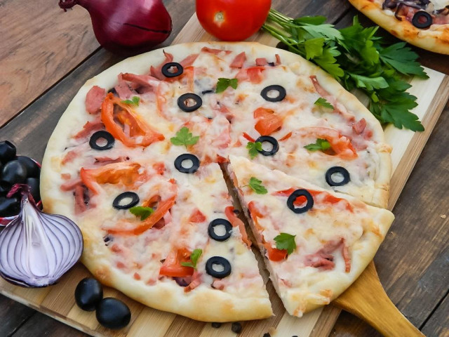
| Ингредиент | Калории (на 100 г) |
| Мука | 364 |
| Сыр | 280 |
| Колбаса | 300 |
| Растительное масло | 884 |
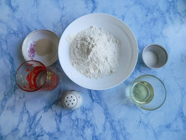
Как сделать домашнюю пиццу в духовке с колбасой и сыром классическую? Начните приготовление пиццы с теста. Подготовьте все необходимые ингредиенты. Оливковое масло используется в классическом рецепте теста для пиццы. Но его можно заменить на любое другое рафинированное растительное масло. Муку используйте высшего сорта. Ее необходимо просеять, чтобы убрать мелкий мусор и насытить кислородом, тогда тесто хорошо поднимется и будет воздушным.
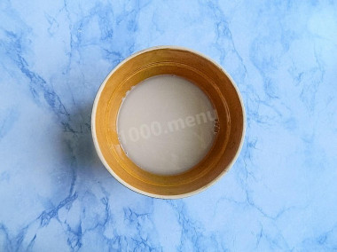
В теплую воду (37-40°С) добавьте сахар и дрожжи. Перемешайте ложкой до полного растворения сахара. При отсутствии специального кулинарного термометра необходимую температуру можно определить следующим способом: нужно капнуть на внутреннюю сторону запястья каплю воды. Если ощущение нейтральное - не холодно и не горячо, значит температура правильная.
При слишком низкой температуре дрожжи будут работать медленнее и для приготовления нужно будет больше времени. При повышенной температуре дрожжи погибнут, и тесто не поднимется. Добавьте 2 ложки муки, перемешайте и оставьте на 10 минут.
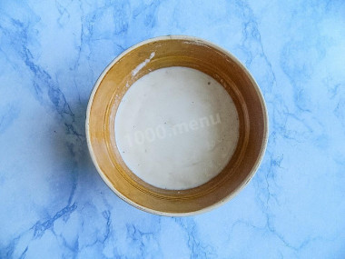
Если на поверхности появилась пышная шапочка, значит дрожжи активизировались, и можно продолжать готовить. Если этого не произошло, то дрожжи придётся заменить. С такими дрожжами тесто не получится.
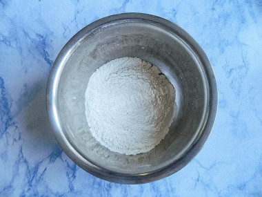
Для вымешивания теста возьмите глубокую миску, в которой будет удобно смешивать сухие и жидкие ингредиенты. Пересыпьте в нее половину муки. Добавьте соль и перемешайте ее с мукой, чтобы тесто равномерно просолилось. Сделайте посередине муки углубление.
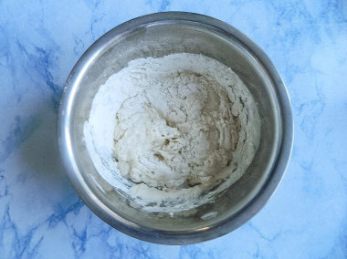
Вылейте в муку растительное масло и небольшими порциями разведенные в воде дрожжи. Обязательно жидкую составляющую добавлять в сухую, а не наоборот. Так тесто получится наиболее удачным. Так как свойства муки одного сорта, но разных производителей могут отличаться, чтобы получить нужную консистенцию, муку добавляйте небольшими порциями.
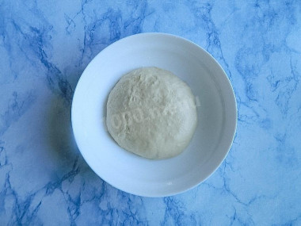
Когда станет затруднительно вымешивать ложкой, начните это делать руками. Тщательно вымесите тесто. Оно должно получиться мягким и нежным, но не липнуть к рукам. Смажьте дно и стенки миски растительным маслом, чтобы тесто не прилипало к посуде. Готовое тесто также обомните руками с маслом. Миску накройте салфеткой или полотенцем, чтобы оно не сохло и хорошо поднималось. Оставьте в теплом месте примерно на 1-1,5 часа.
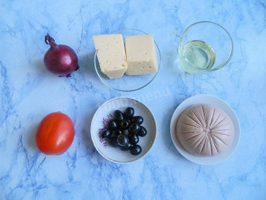
Примерно за полчаса до начала приготовления включите духовку на 200 градусов. Пока поднимается тесто, приготовьте начинку. Сыр выбирайте любой, который хорошо плавится. Колбасу берите ту, которая вам больше нравится. Лук вкуснее красный - у него не такой резкий луковый аромат и вкус слаще.
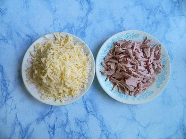
Колбасу нарежьте соломкой - это стандартная нарезка для домашней пиццы. Сыр натрите на крупной терке.
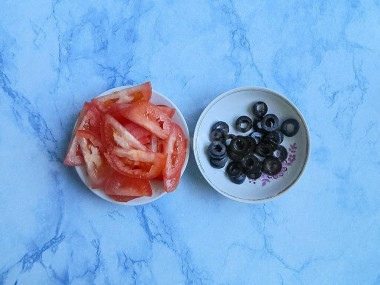
Помидор помойте, высушите, удалите плодоножку и нарежьте на тонкие дольки. Маслины нарежьте колечками - хвостики лучше убрать, с ними пицца будет выглядеть не очень аккуратно.
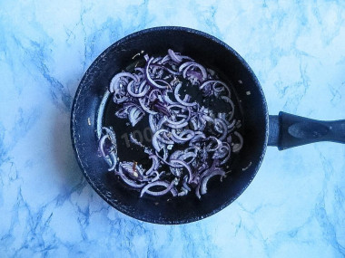
Лук очистите, помойте и нарежьте полукольцами. Разогрейте сковороду с маслом. Обжарьте на ней лук в течение 3 минут, постоянно помешивая. Он не должен стать слишком мягким, а лишь слегка припущенным. Полностью остудите.
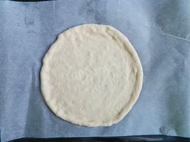
За это время тесто должно увеличиться в несколько раз. Из такого количества теста можно сделать или одну большую пиццу или две маленькие. Я буду делать две пиццы диаметром около 20 см каждая. Разомните тесто руками в круглый пласт прямо на пергаменте. Края оставьте потолще, чтобы образовался бортик.
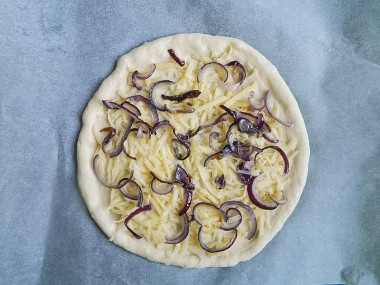
Начинку разделите на 2 пиццы. Равномерно распределите половину сыра, сверху равномерно распределите лук.
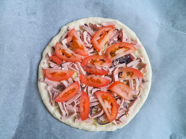
Следующим слоем выложите нарезанную колбасу, сверху - помидор.
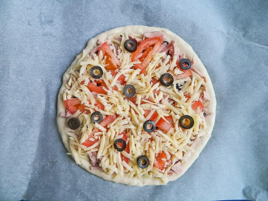
Присыпьте все оставшимся сыром и равномерно разложите маслины. Выпекайте 15-20 минут на средней полке при 200 градусах при режиме "верх-низ". Время приготовления зависит от характеристик вашей духовки, поэтому проверяйте готовность. В готовой пицце тесто поднимется и слегка зарумянится. При аккуратном нажатии ладонью, тесто не должно "гулять".
Со второй пиццей проделайте то же самое. Последовательность слоев в начинке можете изменять по своему вкусу.
Приятного аппетита!
Вверх